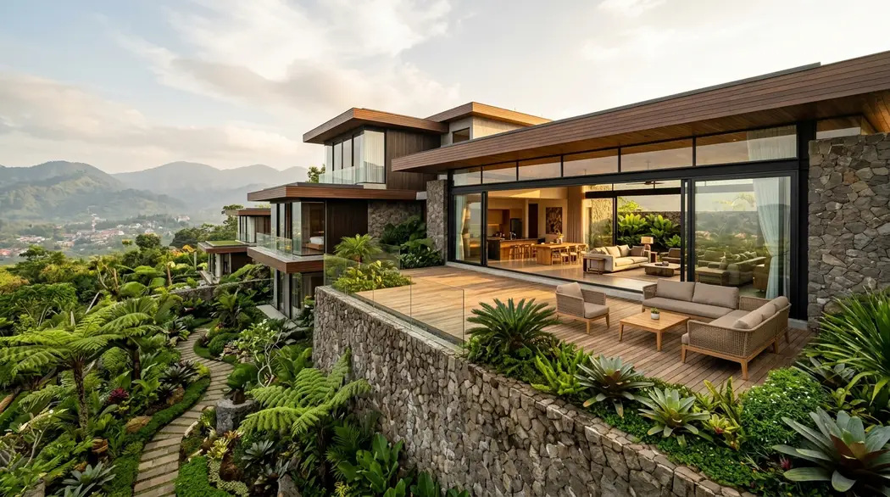

Ringkasan Inti
- Arsitek villa memiliki fokus khusus pada desain hunian peristirahatan dengan nilai estetika dan pengalaman ruang yang lebih personal.
- Analisis lahan menjadi tahap awal krusial sebelum menentukan konsep desain villa bertingkat di Sengkaling.
- Arsitek villa berkoordinasi dengan konsultan struktur untuk memastikan keamanan bangunan pada kontur berbukit.
- Penyelesaian desain akhir mencakup detail material dan elemen outdoor yang memperkuat karakter villa.
Daftar Isi Artikel
- Apa Peran Arsitek Villa dalam Proyek Lahan Kontur Bertingkat?
- Bagaimana Arsitek Villa Menangani Tantangan Lahan Berbukit di Sengkaling?
- Apa yang Membedakan Arsitek Villa dari Arsitek Rumah pada Umumnya?
- Bagaimana Tahap Penyelesaian Desain Villa di Sengkaling Dilakukan?
- FAQ Seputar Arsitek Villa Lahan Kontur Sengkaling
Arsitek villa Malang berperan menganalisis kontur, merancang tata ruang bertingkat, dan memastikan struktur aman untuk hunian di lahan berbukit seperti Sengkaling. Pendekatan ini mengubah tantangan topografi menjadi keunggulan visual panorama yang memikat.
Apa Peran Arsitek Villa dalam Proyek Lahan Kontur Bertingkat?
Arsitek villa Malang memiliki peran menyeluruh dalam proyek lahan kontur bertingkat, mulai dari analisis awal kondisi tanah hingga penyelesaian detail desain yang mempertimbangkan aspek estetika dan fungsi hunian peristirahatan.
Peran spesifik arsitek villa dalam proyek ini:
- Melakukan survei dan analisis kontur lahan untuk memahami potensi dan tantangan yang perlu diatasi dalam desain.
- Merancang zonasi ruang bertingkat yang menyesuaikan level ketinggian lahan sekaligus memaksimalkan pengalaman visual penghuni.
- Menentukan orientasi bangunan yang optimal untuk memanfaatkan pemandangan dan pencahayaan alami khas kawasan Sengkaling.
- Mengoordinasikan aspek struktural dengan konsultan terkait untuk memastikan keamanan bangunan pada kontur berbukit.
Bagaimana Arsitek Villa Menangani Tantangan Lahan Berbukit di Sengkaling?
Arsitek villa menangani tantangan lahan berbukit di Sengkaling melalui pendekatan desain yang menyesuaikan bentuk bangunan dengan kontur alami, alih-alih memaksakan lahan datar melalui pekerjaan tanah yang berlebihan.
Pendekatan yang umum diterapkan untuk menangani tantangan lahan berbukit:
- Menerapkan desain split level atau multi level yang mengikuti kemiringan tanah secara bertahap.
- Merancang retaining wall pada titik-titik kritis untuk menahan pergerakan tanah di sekitar struktur bangunan.
- Merencanakan sistem drainase yang terintegrasi dengan pola aliran air alami lahan berbukit.
- Memaksimalkan bukaan pada sisi bangunan yang menghadap pemandangan terbaik, menjadikan tantangan kontur sebagai keunggulan visual.

Catatan Arsitek Malang
Lahan berkontur di Sengkaling memiliki potensi sudut pandang panorama lembah yang luar biasa. Kunci desain villa yang sukses di area ini adalah meminimalkan cut-and-fill masif dengan menerapkan struktur berjenjang (terraced split level) dan sistem pondasi sumuran atau bored pile yang mengikat langsung pada lapisan tanah keras.
Apa yang Membedakan Arsitek Villa dari Arsitek Rumah pada Umumnya?
Arsitek villa memiliki fokus yang sedikit berbeda dibanding arsitek rumah tinggal pada umumnya, terutama dalam hal penekanan pada pengalaman ruang dan integrasi dengan lanskap sekitar.
Perbedaan yang umum ditemukan:
- Arsitek villa cenderung lebih menekankan pada elemen outdoor seperti teras, kolam renang, atau area bersantai yang terintegrasi dengan lanskap.
- Villa sering dirancang dengan orientasi kuat terhadap pemandangan, sementara rumah tinggal biasa lebih fokus pada efisiensi fungsi harian.
- Pemilihan material pada villa cenderung menonjolkan kesan alami dan mewah, seperti kombinasi kayu dan batu alam.
- Villa bertingkat di lahan kontur membutuhkan pertimbangan struktural tambahan yang lebih kompleks dibanding rumah pada lahan datar biasa.
Bagaimana Tahap Penyelesaian Desain Villa di Sengkaling Dilakukan?
Tahap penyelesaian desain villa di Sengkaling melibatkan detail material dan elemen outdoor yang memperkuat karakter hunian peristirahatan sebelum memasuki proses konstruksi.
Tahapan penyelesaian yang umum dilakukan:
- Finalisasi pemilihan material fasad dan interior yang selaras dengan konsep desain villa kontur.
- Penyusunan gambar kerja detail untuk elemen outdoor seperti teras, kolam renang, atau taman bertingkat.
- Koordinasi akhir dengan kontraktor untuk memastikan seluruh detail desain dapat diimplementasikan sesuai rencana.
FAQ Seputar Arsitek Villa Lahan Kontur Sengkaling
Apakah arsitek villa Malang juga menangani proyek rumah tinggal biasa?
Sebagian arsitek villa juga menangani proyek rumah tinggal, namun pengalaman khusus pada desain villa memberikan nilai tambah untuk proyek dengan penekanan estetika dan pengalaman ruang.
Berapa biaya jasa arsitek villa dibanding arsitek rumah biasa?
Biaya dapat bervariasi tergantung kompleksitas desain dan lingkup layanan, namun proyek villa dengan detail lanskap tambahan umumnya membutuhkan anggaran jasa yang lebih besar.
Apakah villa di lahan kontur Sengkaling memerlukan waktu desain lebih lama?
Waktu desain dapat lebih panjang dibanding lahan datar karena kebutuhan analisis kontur dan koordinasi struktural tambahan yang lebih kompleks.
Arsitek villa Malang memiliki peran penting dalam merancang hunian kontur bertingkat di Sengkaling, mulai dari analisis lahan hingga penyelesaian detail desain yang memperkuat karakter villa. Melibatkan arsitek dengan pengalaman khusus pada proyek villa membantu memastikan hasil akhir yang estetis sekaligus aman secara struktural pada lahan berbukit.
Ingin Bangun Villa Kontur Mewah di Sengkaling?
Konsultasikan ide desain villa split level Anda bersama tim arsitek berpengalaman kami. Dapatkan analisis kontur dan konsep 3D eksklusif.

Tim Editorial Maroon Arsitek
Spesialis konten arsitektur villa mewah, perencanaan lahan lereng berkontur di Malang & Batu, serta panduan teknis konstruksi berstandar profesional.